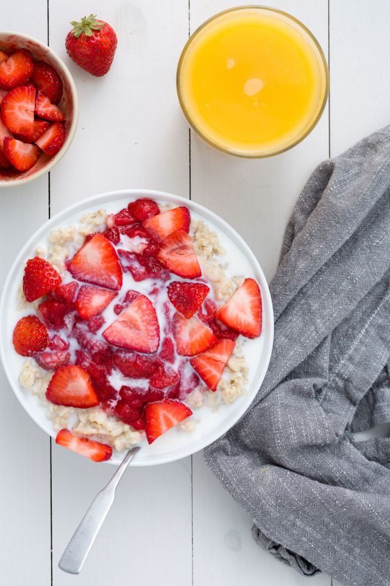

Breakfast
Lunch
Dinner
Breakfast

Strawberries 'N Cream Oatmeal
Simple Poached Egg Avocado Toast
How to Make: 2 Ingredient Banana Pancakes
Lunch
Tuna Patties
One Pan Baked Cod & Veggies
Pizza Margherita Grilled Cheese
Dinner
Easy Teriyaki Salmon
Sesame Chicken with Quinoa
Cilantro-Lime Honey Garlic Salmon